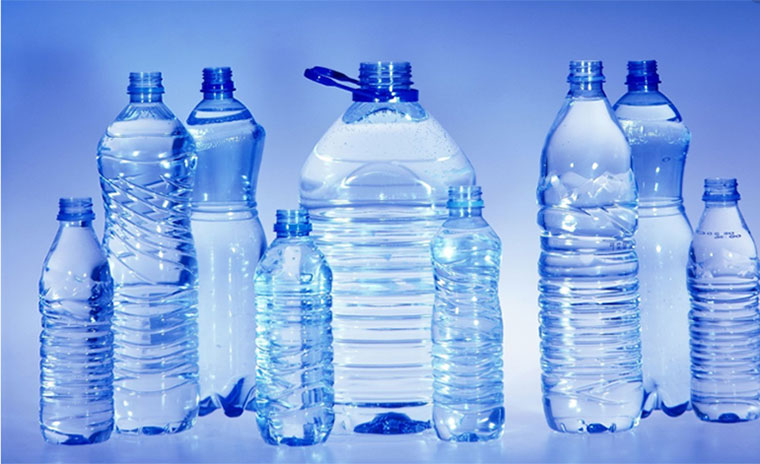

泸州宇泉超轻饮用水有限公司成立于2008年，为四川新火炬化工有限责任公司全资子公司，是国内首家实现工业化生产超轻水（低氘水）的企业；建立了国内第一个超轻水（低氘水）企业标准；并荣获四川省经信委“四川省重点技术创新项目奖”。
母公司四川新火炬化工有限责任公司是国内唯一从事氢同位素—氘科研生产的企业；五十年专注水精馏，氢氧同位素分离技术处于国际领先水平；是国家氧化氘军用标准的起草者。
公司不断进取、持续创新，2005年与上海交通大学生命科学技术学院、西南医科大学等开展产学研合作，进行氢氧同位素工业化生产及产品对人类健康的研究，在低氘水预防和辅助治疗癌症、糖尿病及改善 人体代谢功能方面取得了大量的科研成果。
